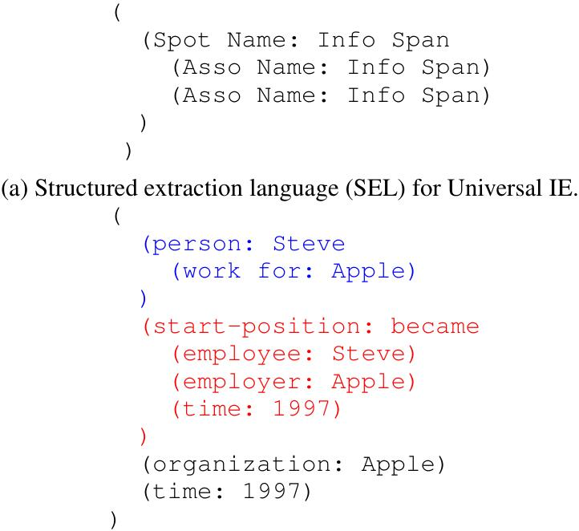
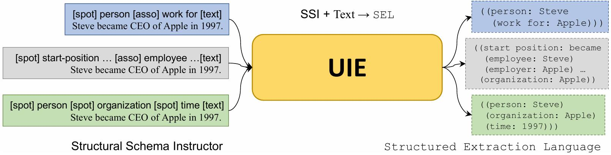
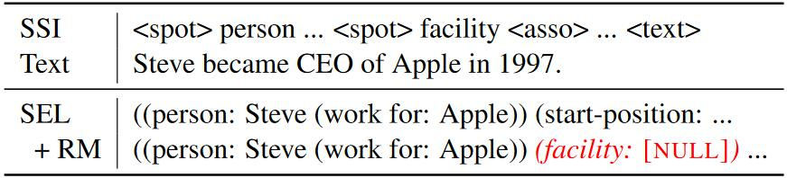
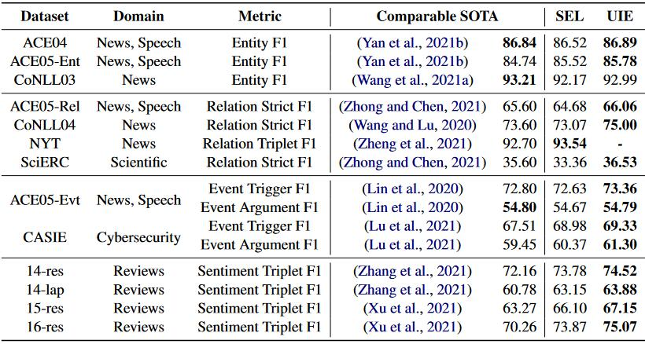

论文：https://arxiv.org/abs/2203.12277
代码：https://github.com/universal-ie/UIE
Accepted to the main conference of ACL2022
什么是信息抽取？
我们首先简单介绍一下信息抽取，有了解的可以直接跳过。
信息抽取(Information Extraction, IE)是自然语言处理(NLP)领域的一个任务，旨在从非结构化的文本数据中自动识别并提取结构化的信息，例如提取文本中的关键实体、关系或事件等。主要关注三个任务：
例：Steve became CEO of Apple in 1997.
- 命名实体识别(Named Entity Recognition, NER)
NER任务的目标是识别文本中的实体(如人名、地点、组织等)并分类。对于上面给出的例句，识别实体"Steve"，类型标注为"person"；识别实体"Apple"，类型标注为"organization"；识别实体"1997"，类型标注为"time"。 - 关系抽取(Relation Extraction)
RE任务的目标是识别文本中的实体关系，明确它们之间的联系。对于上面给出的例句，头实体"Steve"，尾实体"Apple"，他们之间的关系为"work-for"。 - 事件抽取(Event Extraction)
EE任务的目标是识别文本中发生的事件，并提取出事件的参与实体、时间、地点等信息(事件参数)。对于上面给出的例句，识别触发词"became"，类型标注为"start-position"。事件下对应的三个论元"Steve"，“Apple”，“1997"分别扮演"employee”，“employer”，“time"的事件角色。
可以看出，对于不同的IE任务，随着任务目标的变化，需要抽取出的信息的结构也各有不同，例如在NER中要抽取出的是句子中的单词或短语，在RE任务中又需要判断两个实体间的关系。
因此要完成不同的任务，就需要定义不同的抽取模式(即信息抽取时需要遵循的结构化规则或框架)。
但可以观察到，这几个任务之间其实是有共通之处的，比如RE，就可以看作是NER任务的进一步扩展。
是否有办法对这三个任务进行统一建模？
下面我们来看一下UIE这篇文章。
Unified Structure Generation for Universal Information Extraction
IE受到其不同目标、异构结构和特定需求模式的影响，此前大多数IE方法都是为不同的任务设计不同的模型，这存在几个问题：
- 为大量的IE任务/设置/场景开发专用架构非常复杂(比如单独设计一个模型，专门处理RE任务；单独设计一个模型，专门处理EE任务，听起来就很麻烦)。
- 学习孤立的模型严重限制了相关任务和设置之间的知识共享(比如RE任务，NER任务中实体已经抽取好了、类别也标注好了，为什么不能直接用呢)。
- 构建专门用于不同IE任务的数据集和知识源既昂贵又耗时(不同任务的数据集的知识是不是可以共享呢)。
作者认为，所有IE任务都可以建模为文本到结构(text-to-structure)的转换。
Structured Extraction Language for Uniform Structure Encoding (SEL)
首先，要将不同的IE结构编码成统一的表示，这样就可以在同一个文本-结构的生成框架中对各种IE任务进行统一建模。具体而言，作者将这一转换过程拆分为了两个子操作：
例：Steve works for Apple.
- 定位(Spotting)：在文本中找到特定语义类型的span，将文本中的特定span根据预先定义的语义类型进行标注。例：“Steve"被标注为"Person”。
- 关联(Associating)：对已经定位的span进行关联(例如标记实体对之间的关系)。例：将"Steve"标记为Arg1，“Apple"标记为Arg2(类似将"Steve"视为头实体，“Apple"视为尾实体)。关联Arg1和Arg2，即判断这两个实体之间的关系，我们将关系标注为"Work-for”。
作者使用Spot Name和Asso Name分别表示Spotting和Associating操作。Info Span则表示Spot Name和Asso Name所标记的实际文本信息。
我们来看作者给出的一个具体示例。

例：对于文本输入"Steve became CEO of Apple in 1997."，通过SEL生成的结构：
- RE(蓝色)：头实体"Steve”(Info Span)，类型标注为"person”(Spot Name)；尾实体"Apple" (Info Span)，类型标注为"organization"(Spot Name)；关系"work-for"(Asso Name)。
- EE(红色)：触发词"became"(Info Span)，类型标注为"start-position"(Spot Name)。事件下对应的三个论元"Steve" (Info Span)，“Apple” (Info Span)，“1997” (Info Span)分别扮演"employee"(Spot Name)，“employer”(Spot Name)，“time”(Spot Name)的事件角色。
- NER(黑色)：实体"Steve"(Info Span)，类型标注为"person"(Spot Name)；实体"Apple" (Info Span)，类型标注为"organization"(Spot Name)；实体"1997" (Info Span)，类型标注为"time"(Spot Name)。
这样一来，无论对二元关系，还是N元论元结构，都可以用SEL语法表示。
Structural Schema Instructor for Controllable IE Structure Generation (SSI)
虽然三个IE任务都可以通过SEL统一表示结构，但模型还不知道什么时候该做什么。
作者设计了特殊符号[spot], [asso]和[text]，分别添加到每个Spot Name、Asso Name和输入文本序列之前，来提示模型要提取哪些信息。

具体的例子如图所示，类似于给一个表格让模型去填写表格内容。
但当需要提取出的信息较多、句子结构比较复杂的情况下，输入序列会变得非常长：

Structure Generation with UIE
简单来说，UIE的输入是SSI+Text的形式，输出是用SEL语法表示的结构。UIE整体可以看作是Encoder-Decoder架构的模型：
Encoder
$$ H = Encoder(s_1, s_2, s_{|s|}, x_1, ..., x_{|x|}) $$Decoder
$$ y_i, h_i^d = Decoder([H; h_1^d, ..., h_{i-1}^d]) $$当解码器生成特殊的结束符号<eos>时，解码过程完成。
作者认为，文本-结构的生成范式将标签视为自然语言标记，这一方法可以有效地转移来自BART、T5等预训练语言模型的知识，相关任务可以很容易地共享知识，因为它们的标签具有相似的语义(例如，location和place)，并共享共同的标签-文本关联(例如，不同事件类型的受害者)。
Pre-training for UIE
预训练数据集
包括结构化(例如，知识库)、非结构化(例如，原始文本)和并行(例如，维基百科-维基数据链接)数据：
- $D_{record}$(结构)：$D_{record}$是一个结构数据集，每个实例是一个结构化记录$y$。该数据集从ConceptNet(一个常识知识库)和Wikidata中收集结构化记录。$D_{record}$用于预训练UIE的结构解码能力，帮助模型在理解结构化记录后，能够从这些记录生成有效的输出。
- $D_{text}$(文本)：$D_{text}$是一个非结构化文本数据集，包含英语维基百科中的所有纯文本。$D_{text}$用于预训练UIE的语义编码能力。通过对大规模的非结构化文本进行训练，模型能够更好地理解自然语言的语义、上下文和结构特征。
- $D_{pair}$(文本+结构)：$D_{pair}$是文本-结构的并行数据集，每个实例由一对$(token序列x，结构化记录y)$组成。Dpair用于预训练UIE的文本到结构转换能力，使模型能够理解和处理文本与其对应结构之间的关系。
预训练任务
使用三个序列生成任务来预训练UIE：
- Text-to-Structure Pre-training using $D_pair$：$p(y|x,s_meta)$表示在给定文本和模式的条件下生成结构记录$y$的概率。 $$ {L}_{\text {Pair}}=\sum_{(x, y) \in \mathcal{D}_{\text {pair}}}-\log p\left(y \mid x, s_{\text {meta}} ; \theta_{e}, \theta_{d}\right) $$
- Structure Generation Pre-training with $D_record$：在给定之前生成的token的情况下，预测当前token $y_i$的负对数似然。 $$ {L}_{\text {Record}}=\sum_{y \in \mathcal{D}_{\text {record}}}-\log p\left(y_i \mid y_{< i}; \theta_{d}\right) $$
- Retrofitting Semantic Representation using $D_text$：给定被Mask的源文本，让模型还原被Mask的部分。 $$ {L}_{\text {Text}}=\sum_{x \in \mathcal{D}_{\text {text}}}-\log p\left(x^{\prime \prime} \mid x^{\prime} ; \theta_{e}, \theta_{d}\right) $$
Fine-tuning for UIE
$$ {L}_{FT}=\sum_{(s, x, y) \in \mathcal{D}_{\text {Task}}}-\log p\left(y \mid x, s; \theta_{e}, \theta_{d}\right) $$
为了缓解暴露偏差，在解码过程中，作者还设计了一种拒绝机制。给定实例$(s, x, y)$，使用SEL对$y$进行编码，随机加入$[NULL]$噪声。具体示例如图所示：

句子中没有facility实体，在模型学习时随机注入"(facility：[NULL])“的噪声。通过这种方式，UIE可以通过生成[NULL]来有效地学习拒绝误导生成。
Experiment
可以看到，UIE在多个任务上SOTA。
ps：其他的实验结果具体可以看原文，在这里就不详细说明了。
Conclusion
提出了一个统一的文本到结构生成框架——UIE(T5+结构化生成)，它可以通用地建模不同的IE任务，自适应地生成有针对性的结构，并从不同的知识源中学习通用的IE能力：
- 多样化的目标结构 —> SEL统一编码异构抽取结构
- 需求特定的抽取模式 —> 基于模式的提示机制SSI
- 不同任务之间知识难以共享 —> 在包含多个任务的数据集上预训练模型